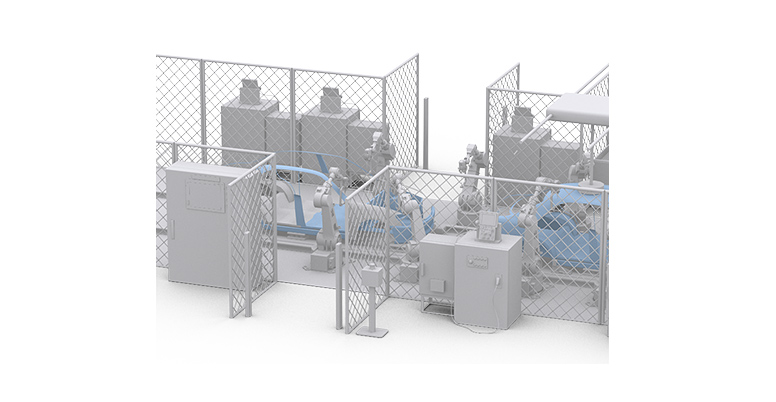
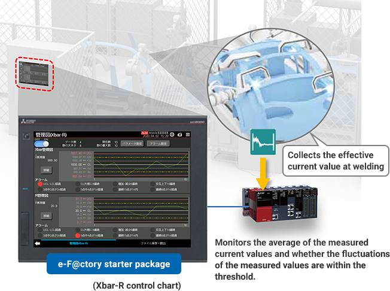
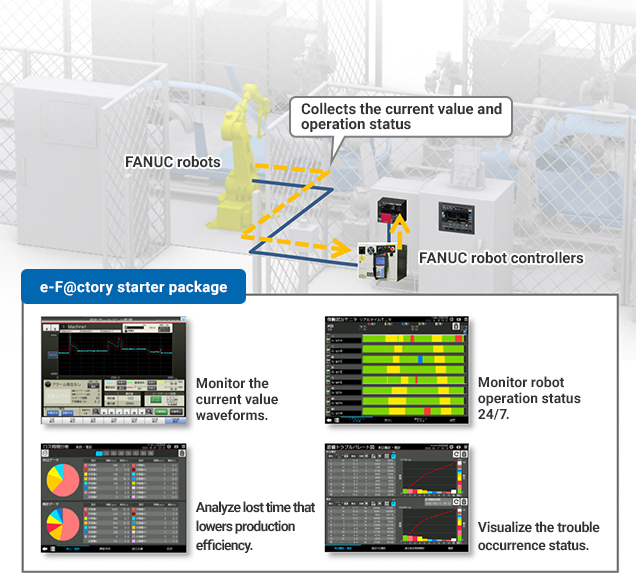
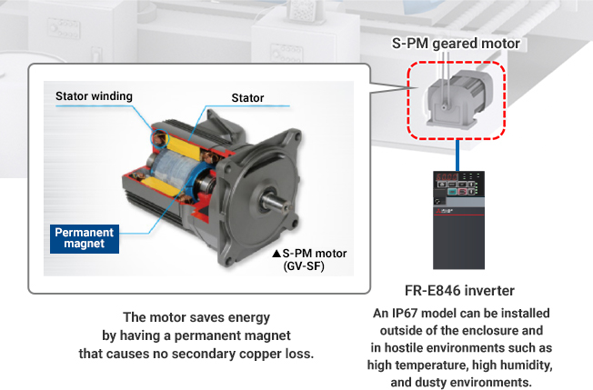
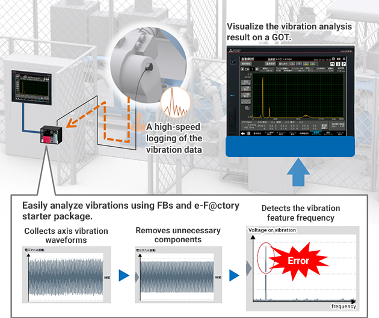

Solutions
Automotive Manufacturing

Welding
- Maintaining and managing welding quality by monitoring the welding conditions constantly
- Improving an operating rate by monitoring the operations of welding robots
- Improving energy efficiency of a belt conveyor and reducing cost by eliminating an enclosure
- Collecting and analyzing data by a PLC for preventive maintenance

Solutions to the Issues
| Issues | Solutions |
|---|---|
| Maintaining and managing welding quality by monitoring the welding conditions constantly | Monitor the quality fluctuation and alarms with an Xbar-R control chart. |
| Improving an operating rate by monitoring the operations of welding robots | Visualize the robot operation status and identify the cause of troubles with e-F@ctory starter package. |
| Improving energy efficiency of a belt conveyor and reducing cost by eliminating an enclosure | Control a belt conveyor by a high-performance, energy-saving S-PM geared motor. |
| Collecting and analyzing data by a PLC for preventive maintenance | Collect the vibration data of fragile reducers and analyze the collected data by a PLC. |
Issues
Maintaining and managing welding quality by monitoring the welding conditions constantly
Solutions
Collect and analyze the effective current value at welding and visualize the welding condition. Maintain and manage welding quality by monitoring the quality fluctuation or alarms in real time with an Xbar-R control chart.
- Collect and analyze the effective current value at welding, and visualize the welding condition on a GOT.
- Manage production processes and maintain welding quality by monitoring quality fluctuations in real time with an Xbar-R control chart of e-F@ctory starter package.
Point
- Create a control chat with a control chart (Xbar-R) function of e-F@ctory starter package in real time and send feedback to the shop floor.

Product Lineup


Issues
Improving an operating rate by monitoring the operations of welding robots
Solutions
Collect the axis current value and operation status data by connecting a FANUC robot controller to a PLC. Improve the operating rate by analyzing the collected data and visualizing the current condition.
- Connect a robot controller to an Ethernet module, collect data required to monitor the operation status (axis current values and errors, operation status) from the controller, and utilize the collected data with e-F@ctory starter package.
- Analyze the collected data and visualize the condition to improve the operating rate with e-F@ctory starter package.
Point
- Collect and monitor each axis current value and the operation status data of up to eight robots on a GOT by connecting a robot controller and MELSEC iQ-R series via Ethernet.
- Detect errors that were difficult to find with a simple threshold monitoring, monitor operation status 24/7, and identify the cause of troubles by monitoring the trouble occurrence status.

Product Lineup
Issues
Improving energy efficiency of a belt conveyor and reducing cost by eliminating an enclosure
Solutions
Save energy by using a high-performance, energy-saving S-PM geared motor to control a belt conveyor. Save costs by using an IP 67 model of inverters that can be installed in various environments, including outside of an enclosure.
- The S-PM motor is a synchronous motor having a strong permanent magnet (high-performance ferrite magnet) in the rotor.
Unlike induction motors, the motor does not show slipping (drop in rotation speed under increased load), and it is suitable for high-accuracy speed control. - An IP 67 model of inverters improves environmental resistance and allows installation in various equipment and environments, including corrosive environments and surrounding air temperatures between -20°C and 60°C.
Point
- The S-PM motor does not cause secondary copper loss and can keep a high motor efficiency. It requires less energy to apply the same force, leading to energy saving.
- An IP67 model inverter can be installed outside the enclosure, allowing installation in various environments.

Product Lineup

Issues
Collecting and analyzing data by a PLC for preventive maintenance
Solutions
Collect the vibration data of fragile reducers, analyze the collected data by a PLC, and detect an abnormal frequency, enabling preventive maintenance.
- FBs are provided to analyze vibrations by FFT (fast Fourier transform) and digital filters.
- Analyze the vibration data and monitor the threshold with quantified vibration data, enabling equipment condition monitoring utilizing vibration data.
Point
- Use any FBs to create a vibration analysis program, and create an original vibration analysis and diagnosis for your equipment.
- Create a simple vibration analysis with less initial investment.
